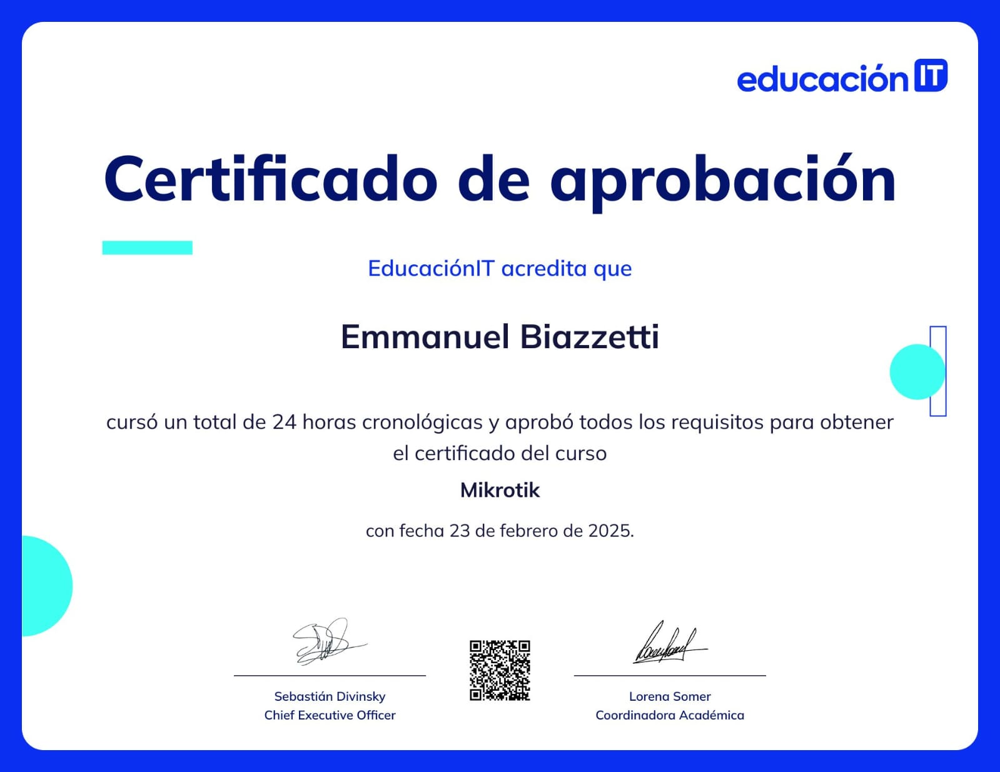
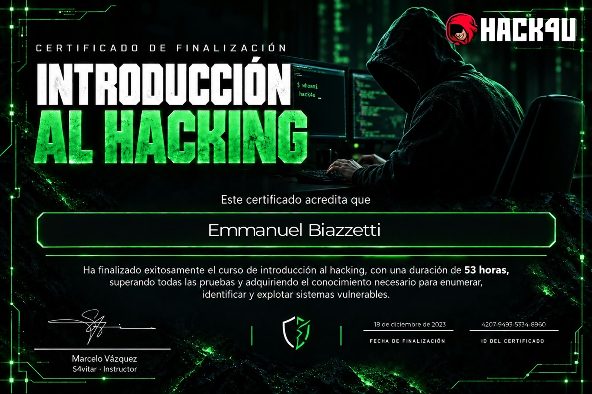
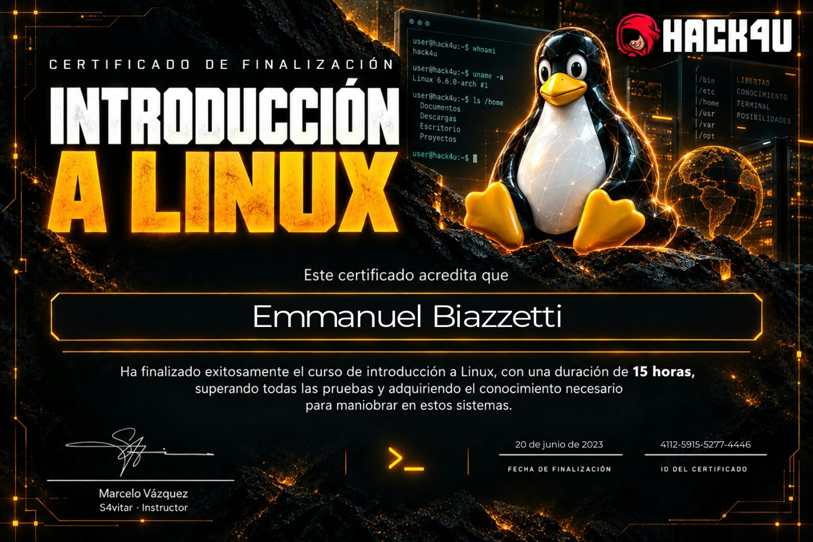
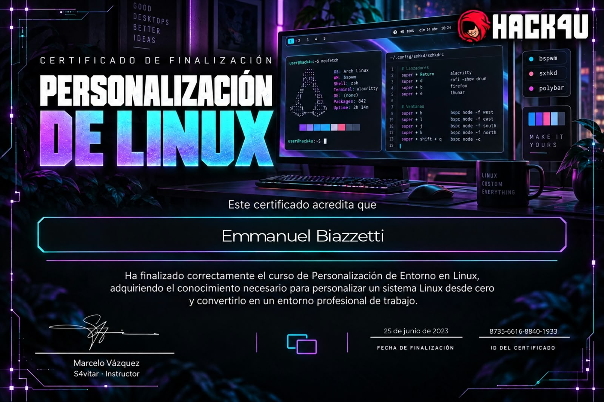

Hola, soy Emmanuel Biazzetti
NOC L2 · Administración de Redes · Infraestructura IT · Automatización
Diseño, administro y automatizo infraestructuras de red. Más de 10 años de experiencia en soporte IT, telecomunicaciones y operación de redes ISP, con foco en conectividad, fibra óptica, routing, switching y videovigilancia IP.
Redes que funcionan, y procesos que se automatizan
Soy de San Juan, Argentina. Comencé en soporte técnico e infraestructura y fui creciendo hacia la administración de redes en proveedores de servicios de internet (ISP). Me interesa especialmente la operación de redes (NOC), la ciberseguridad (SOC) y el desarrollo de herramientas propias que permitan automatizar tareas, optimizar procesos y resolver problemas de manera eficiente.
Redes e ISP
Routing, switching, VLAN y administración de redes de proveedores con tecnología MikroTik, Cisco y Ubiquiti.
Fibra óptica
FTTH y gestión de OLT ZTE y Ubiquiti: puesta en marcha, aprovisionamiento y soporte.
Videovigilancia IP
Redes segmentadas para cámaras Hikvision con switching TP-Link y routing MikroTik.
Automatización
Scripts en Python y Linux para tareas de infraestructura y monitoreo de redes.
Stack técnico
Herramientas con las que trabajo a diario.
Redes y telecomunicaciones
Sistemas y automatización
Desarrollo y datos
Idiomas
Trayectoria profesional
Del soporte técnico a la administración de redes.
Técnico en Electrónica y Telecomunicaciones / Administrador de Redes
- Administración de la red del ISP con equipos MikroTik, Cisco y Ubiquiti.
- Gestión de OLT ZTE y Ubiquiti y despliegue de fibra óptica.
- Automatización de tareas de infraestructura con Python.
Soporte Técnico IT
- Soporte de una red segmentada de videovigilancia IP.
- Equipamiento Hikvision, MikroTik y switches TP-Link.
Técnico de Soporte e Infraestructura
- Soporte técnico, mantenimiento y puesta en marcha de infraestructura.
Cosas que construí
Herramientas y laboratorios que desarrollo para aprender y resolver problemas reales.
AirPulse
Herramienta de gestión y monitoreo de dispositivos Ubiquiti desarrollada en Python y PySide6. Busca simplificar las tareas de administración y supervisión de equipos de infraestructura de red mediante una interfaz gráfica.
CashFlow
Aplicación en Python para automatizar cierres de caja, conciliar pagos de Wisphub y detectar diferencias en la recaudación.
Automatización Ubiquiti
Herramientas en Python y Batch para automatizar tareas de gestión, monitoreo y mantenimiento de equipos Ubiquiti.
Calculadora de subredes
Escribí una IP con su máscara, como 192.168.10.0/26 o 192.168.10.0 255.255.255.192, y te muestro la red, el broadcast, el rango de hosts y más. Se calcula en tu navegador. También está en la terminal: probá ipcalc.
Educación y aprendizaje continuo
Universidad Nacional de San Juan
Cursé 2 años de Ciencias de la Computación y 3 años de Bioingeniería, con base en programación, matemática y electrónica.
En formación
Networking, ciberseguridad, Java, Bash y Python, con foco en operaciones de red (NOC/SOC).
Certificados

🌐MikroTik

🛡️Introducción al Hacking
 🐍
🐍Python Ofensivo

🐧Introducción a Linux

🖥️Personalización de Linux
¿Mi perfil encaja con tu búsqueda?
Cuento con experiencia en soporte IT, telecomunicaciones y administración de infraestructura de redes. Busco nuevos desafíos profesionales donde aportar mis conocimientos, aprender y seguir creciendo dentro de un equipo de tecnología. Estoy abierto a oportunidades laborales en San Juan y modalidad remota.